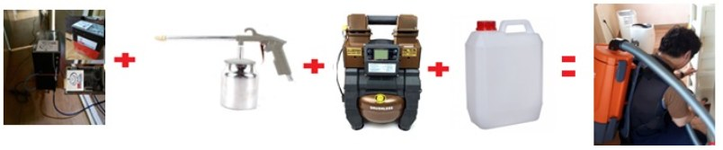
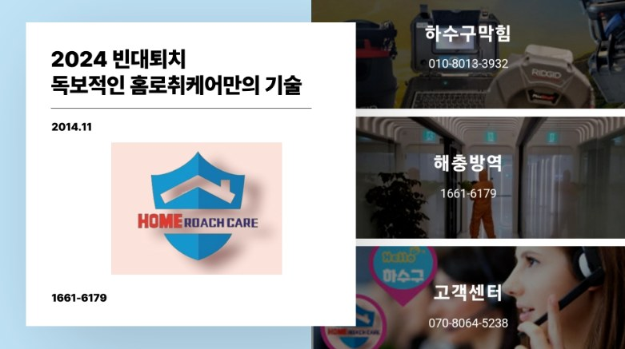
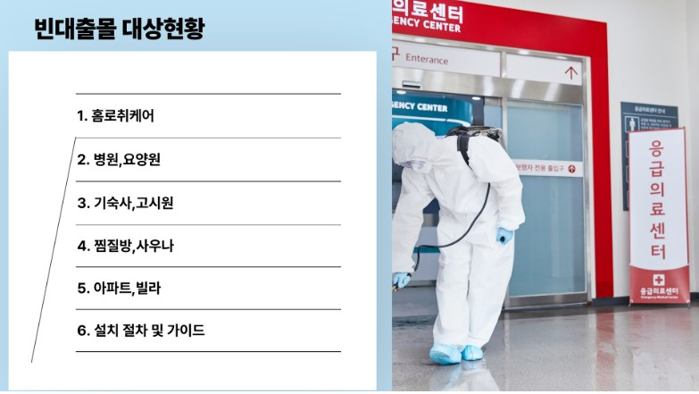
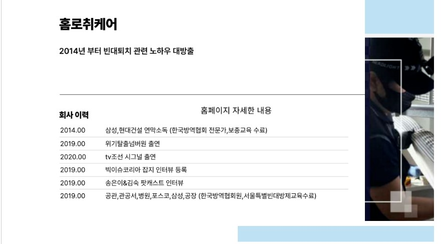

좀벌레 방제/빈대방제
좀벌레/ 방제[일반]
| 좀벌레/ 방제[일반] | ||||
|---|---|---|---|---|
| 적용평수 | 1회성 | 좀벌레 2회성 | 3차 좀벌레 | 재고객 1회성 (회당) |
| 원룸 | 100,000원 | 180,000원 | 8 | 9 |
| 30평 이하 | 120,000원 | 200,000원 | 10 | 11 |
| 50평 이하 | 150,000원 | 250,000원 | 12 | 14 |
| 100평 이하 | 180,000원 | 300,000원 | 14 | 17 |
| 이상 | 별도견적 | |||
- 좀벌레 경우 1회 도포작업,2회 도포작업이 적용됩니다.
- 일반방법의 경우 1회 훈증 , 2회 도포작업이 적용됩니다.(필요시에만 훈증 적용)
- 야간 및 공휴일은 별도 할증요금이 적용됩니다
- 작업간격은 최소 15일 이상은 적용하셔야 합니다.
- 훈증작업시에는 집안에 있는 화분, 수족관, 애완동물 등은 모두 밖으로 나와야 합니다.
- 훈증 작업은 꼭 필요시에만 적용합니다.
- 친환경약품의 경우는 2시간 정도 충분한 환기 필요합니다.

◆ 작업 중에 집에 계셔도 됩니다. 안전하게 모시겠습니다.
빈대방제
| 적용평수 | 1회성 | 2회성 | 3차진행 | 고시원렌탈(30일) |
|---|---|---|---|---|
| 전체평수 | 방역횟수 | 별도견적 | 별도협의 | 별도협의 |
- 빈대 1차 2차 간격은 15일로 하되 오염도가 높을시 다음날 바로 보여지기에 2차 작업을 당겨서 진행합니다.
- 빈대 박멸을 위해서는 발생 일과 빈도수 합산후 시공 범위를 결정합니다.
- 출현된 날짜가 오랜 시간이 경과될시 퇴치기간이 길어 질 수 있습니다.
- 빈대잡으려다 초가삼간 태운다. (정확한 상담을 통해서 진단을 내릴 수 있습니다. )
- 2014년부터 여러 시행착오로 빈대 빈도수 증가 파악 대비 전용박멸기/천연약품 사용
- 홈로취케어만의 장점 작업시 외출 필요없습니다. (현장을 그대로 노출합니다.)
- 저희 전문가님 작업 및 사후관리 지침에만 따라주시면 100% 박멸됩니다.
- 홈페이지 메인페이지에 블로그 현장사진을 클릭후 빈대 검색 하시면 작업 이력이 있습니다.


